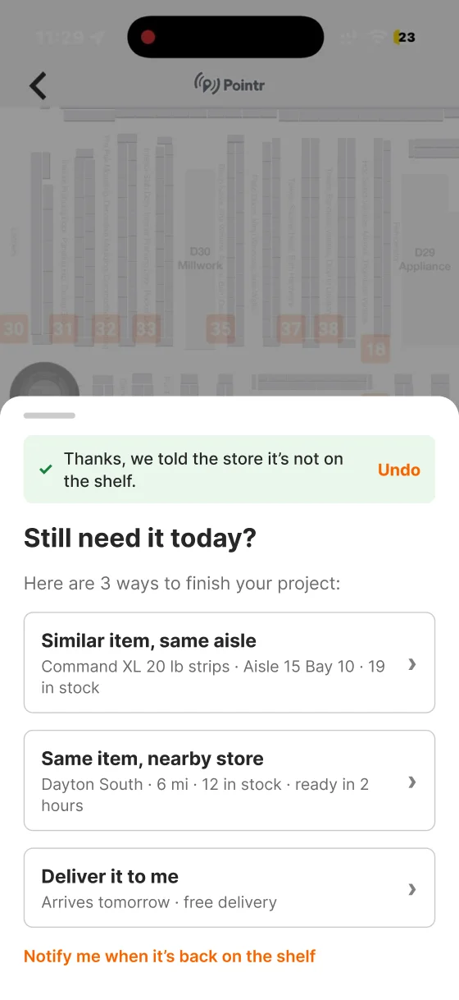

Concept · 2026 · AI assistant · Retail concept
Ask the right question, finish the task
- Problem
- The Home Depot's AI assistant gave different answers at home and in Store Mode, and an empty shelf ended with "Thanks for letting us know."
- What I did
- Interviewed a first-time DIYer while they used the app, then designed 6 small changes on the real screens.
- Result
- A concept with hypotheses to test, not results. Not affiliated with The Home Depot.
- 1recorded interview
- 2pain points
- 6small changes
01The problem
Asked how to hang a photo frame, Store Mode showed only hanging kits. Adhesive strips appeared only after the person typed "Adhesive." When the strips weren't on the shelf, reporting it led nowhere.
02Key decisions
1Ask the most important question first

WhyOne question, "how do you want to hang it?", would have caught adhesive in my interview.
Hypothesis: fewer repeat questions
2Report, then finish the task

WhyThe store gets a signal, but the shopper still needs the product: a similar item, a nearby store, or delivery.
Hypothesis: more reports end in a purchase
03What I rejected, and why
Rejected
My first lo-fi redesign of the whole journey
It changed too much of the app. I kept the ideas and moved them onto the real screens.